import geopandas as gpd
import pandas as pd
from geowrangler2 import gridsGrid Generation Tutorial
A basic introduction to Geospatial Grids
Basic Usage
Creating a grid from a geojson file
Import geopandas and the geowrangler2.grids module
Load a sample geojson file into pandas
In our case, we are loading the Region 3 (Central Luzon Administrative Region) of the Philippines.
region3_gdf = gpd.read_file("../data/region3_admin.geojson")This geopandas dataframe has the size:
length of region3_gdf: 1 row(s)display(region3_gdf)| Reg_Code | Reg_Name | Reg_Alt_Name | geometry | |
|---|---|---|---|---|
| 0 | 030000000 | Region III | Central Luzon | MULTIPOLYGON (((120.11687 14.76309, 120.11684 ... |
Show the original plot
import matplotlib.pyplot as plt
ax = region3_gdf.plot(ax=plt.axes())
region3_gdf.crs # CRS info<Geographic 2D CRS: EPSG:4326>
Name: WGS 84
Axis Info [ellipsoidal]:
- Lat[north]: Geodetic latitude (degree)
- Lon[east]: Geodetic longitude (degree)
Area of Use:
- name: World.
- bounds: (-180.0, -90.0, 180.0, 90.0)
Datum: World Geodetic System 1984 ensemble
- Ellipsoid: WGS 84
- Prime Meridian: Greenwichaoi_total_bounds = region3_gdf.total_bounds
aoi_total_boundsarray([119.7858332, 14.4075257, 122.2429921, 16.5092548])Square Grid Generator
Creating Grids
Create a grid generator with a size of 5,000 m. The units of the grid size are dependent on the projection parameter
of the grid generator. In this case, the default is EPSG:3857.
grids.SquareGridGenerator?Init signature:
grids.SquareGridGenerator(
cell_size: float,
grid_projection: str = 'EPSG:3857',
boundary: Union[geowrangler2.grids.SquareGridBoundary, List[float]] = None,
)
Docstring: <no docstring>
File: ~/geowrangler2/geowrangler2/grids.py
Type: type
Subclasses: grid_generator5k = grids.SquareGridGenerator(5_000) # 5 km x 5 km square cellsGenerate square grids > Notice the time taken to grid the multi polygon at 5K resolution
# slow
grid_gdf5k = grid_generator5k.generate_grid(region3_gdf)CPU times: user 614 ms, sys: 0 ns, total: 614 ms
Wall time: 617 msgrid_gdf5k.plot()<AxesSubplot:>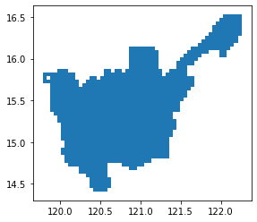
Show gridded version of sample geojson file at 5K resolution
length of grid_gdf5k: 1074 row(s)# slow
ax = region3_gdf.plot(facecolor="none", edgecolor="blue")
ax = grid_gdf5k.plot(ax=ax, facecolor="none", edgecolor="green")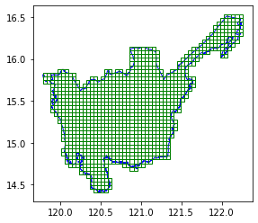
In addition to the grid cells, there are 2 extra columns x and y when combined are unique per grid. It can also tell us which grids are adjacent to each other.
# slow
grid_gdf5k.head()| x | y | geometry | |
|---|---|---|---|
| 0 | 7 | 8 | POLYGON ((120.10024 14.75528, 120.14516 14.755... |
| 1 | 6 | 8 | POLYGON ((120.05533 14.75528, 120.10024 14.755... |
| 2 | 9 | 8 | POLYGON ((120.19008 14.75528, 120.23499 14.755... |
| 3 | 2 | 24 | POLYGON ((119.87566 15.44910, 119.92058 15.449... |
| 4 | 2 | 25 | POLYGON ((119.87566 15.49239, 119.92058 15.492... |
# slow
ax = region3_gdf.plot(facecolor="none", edgecolor="blue")
ax = grid_gdf5k[grid_gdf5k["x"] == 10].plot(ax=ax, facecolor="none", edgecolor="green")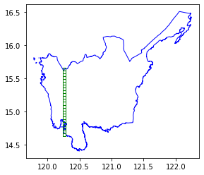
Gridding at a coarser resolution
Let’s try the same process but with a bigger grid (15K)
grid_generator15k = grids.SquareGridGenerator(15_000) # 15 km x 15 km gridsGenerate square grids > Notice the time taken to grid the multi polygon at 15K resolution (compared to 5K resolution)
grid_gdf15k = grid_generator15k.generate_grid(region3_gdf)CPU times: user 548 ms, sys: 0 ns, total: 548 ms
Wall time: 547 msax = region3_gdf.plot(facecolor="none", edgecolor="blue")
grid_gdf15k.plot(ax=ax, facecolor="none", edgecolor="green")<AxesSubplot:>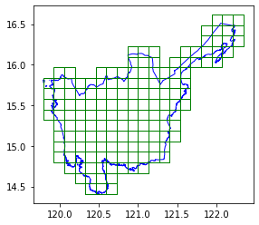
Show gridded version of sample geojson file at 15K resolution
length of grid_gdf15k: 154 row(s)Reusing boundaries
If you have 2 polygons that are far from each other but wish to have them follow the reference same reference x and y, you can use pass in custom boudaries.
Let’s load some grids that are from each other
cell1 = grid_gdf15k.head(1)
cell2 = grid_gdf15k.tail(1)pd.concat([cell1, cell2])| x | y | geometry | |
|---|---|---|---|
| 0 | 2 | 2 | POLYGON ((120.05533 14.66839, 120.19008 14.668... |
| 153 | 18 | 16 | POLYGON ((122.21128 16.48548, 122.34603 16.485... |
ax = region3_gdf.plot(facecolor="none", edgecolor="red")
ax = grid_gdf15k.plot(ax=ax, facecolor="none", edgecolor="green")
ax = pd.concat([cell1, cell2]).plot(ax=ax)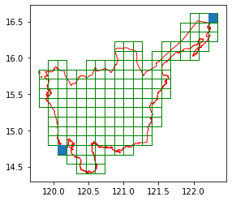
grid_generator1k = grids.SquareGridGenerator(1_000, boundary=aoi_total_bounds)gridcell1 = grid_generator1k.generate_grid(cell1)CPU times: user 27.1 ms, sys: 0 ns, total: 27.1 ms
Wall time: 27.8 mslen(gridcell1)272gridcell1.head()| x | y | geometry | |
|---|---|---|---|
| 0 | 29 | 30 | POLYGON ((120.04634 14.66839, 120.05533 14.668... |
| 1 | 29 | 31 | POLYGON ((120.04634 14.67708, 120.05533 14.677... |
| 2 | 29 | 32 | POLYGON ((120.04634 14.68577, 120.05533 14.685... |
| 3 | 29 | 33 | POLYGON ((120.04634 14.69446, 120.05533 14.694... |
| 4 | 29 | 34 | POLYGON ((120.04634 14.70315, 120.05533 14.703... |
ax = gridcell1.plot(facecolor="none", edgecolor="green")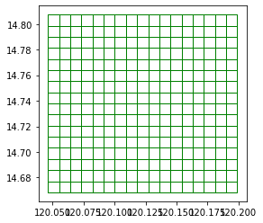
gridcell2 = grid_generator1k.generate_grid(cell2)CPU times: user 20.2 ms, sys: 0 ns, total: 20.2 ms
Wall time: 18.7 mslen(gridcell2)20gridcell2.head()| x | y | geometry | |
|---|---|---|---|
| 0 | 269 | 239 | POLYGON ((122.20230 16.47686, 122.21128 16.476... |
| 1 | 269 | 240 | POLYGON ((122.20230 16.48548, 122.21128 16.485... |
| 2 | 269 | 241 | POLYGON ((122.20230 16.49409, 122.21128 16.494... |
| 3 | 269 | 242 | POLYGON ((122.20230 16.50270, 122.21128 16.502... |
| 4 | 270 | 239 | POLYGON ((122.21128 16.47686, 122.22027 16.476... |
ax = gridcell2.plot(facecolor="none", edgecolor="red")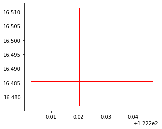
ax = region3_gdf.plot(facecolor="none", edgecolor="blue")
ax = gridcell1.plot(ax=ax, color="green")
ax = gridcell2.plot(ax=ax, color="red")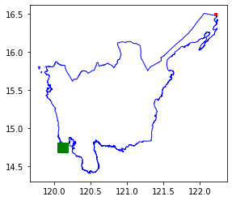
Generating grids for multiple distant areas
If you are using AOIs that are vary far from each other, Grid Generator already optmizes the implementation for you
sparse_aois = grid_gdf15k.iloc[
0:1000:3,
] # Get areas that far from each other
ax = region3_gdf.plot(facecolor="none", edgecolor="blue")
ax = sparse_aois.plot(ax=ax, facecolor="none", edgecolor="green")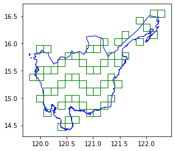
sparse_grid = grid_generator1k.generate_grid(sparse_aois)ax = region3_gdf.plot(facecolor="none", edgecolor="blue")
ax = sparse_grid.plot(ax=ax, facecolor="none", edgecolor="green")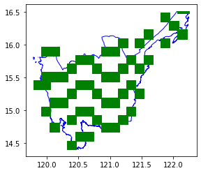
It is a bit hard to see the grids so, we get a subset to verify.
ax = sparse_grid.head(1000).plot(facecolor="none", edgecolor="green")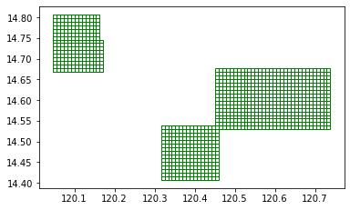
H3 Grid Generator
Generating grids
Let us generate grids of resolution 5. To learn more about the different resolution, visit: https://h3geo.org/docs/core-library/restable/
h3_generator = grids.H3GridGenerator(resolution=5)h3_5_gdf = h3_generator.generate_grid(region3_gdf)CPU times: user 2.79 s, sys: 6.39 ms, total: 2.8 s
Wall time: 2.81 sax = region3_gdf.plot(aspect="equal")
ax = h3_5_gdf.plot(ax=ax, facecolor="none", edgecolor="blue", aspect="equal")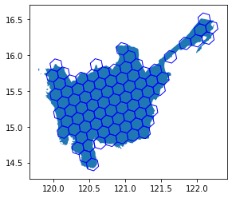
Not exporting geometry
If you do not plan to use use geometry, you can pass return_geometry=False to just get a normal pandas DataFrame with the ids.
h3_generator_no_geom = grids.H3GridGenerator(resolution=5, return_geometry=False)h3_region3_no_geom = h3_generator_no_geom.generate_grid(region3_gdf)CPU times: user 2.75 s, sys: 26.9 ms, total: 2.78 s
Wall time: 2.78 slen(h3_region3_no_geom)84h3_region3_no_geom.head()| hex_id | |
|---|---|
| 0 | 85694103fffffff |
| 1 | 856941d7fffffff |
| 2 | 85694e83fffffff |
| 3 | 85694e93fffffff |
| 4 | 85694387fffffff |
Bing Tile Grid Generator
Generating grids
Let us generate grids of zoom_level 12. To learn more about the different resolution, visit: https://docs.microsoft.com/en-us/bingmaps/articles/bing-maps-tile-system
bing_tile_grid_generator = grids.BingTileGridGenerator(12)# slow
bing_tile_gdf = bing_tile_grid_generator.generate_grid(region3_gdf)CPU times: user 7.37 s, sys: 0 ns, total: 7.37 s
Wall time: 7.37 s# no_test
ax = region3_gdf.plot(facecolor="none", edgecolor="blue")
ax = bing_tile_gdf.plot(ax=ax, facecolor="none", edgecolor="green")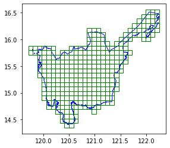
Not exporting geometry
If you do not plan to use use geometry, you can pass return_geometry=False to just get a normal pandas DataFrame with the ids.
bing_tile_grid_generator_no_geom = grids.BingTileGridGenerator(
12, return_geometry=False
)# slow
bing_region3_keys = bing_tile_grid_generator_no_geom.generate_grid(region3_gdf)CPU times: user 7.45 s, sys: 7.19 ms, total: 7.45 s
Wall time: 7.45 s# no_test
bing_region3_keys.head()| quadkey | |
|---|---|
| 0 | 132303030330 |
| 1 | 132303030331 |
| 2 | 132303030313 |
| 3 | 132303012302 |
| 4 | 132303012031 |
Converting quadkey to x,y,z format
If you need to convert the quadkey to x,y format, you can pass add_xyz_cols=True to add the x and y columns to the returned dataframe.
bing_tile_grid_generator_add_xyz = grids.BingTileGridGenerator(12, add_xyz_cols=True)# slow
bing_region3_keys = bing_tile_grid_generator_add_xyz.generate_grid(region3_gdf)CPU times: user 8.85 s, sys: 20 ms, total: 8.87 s
Wall time: 8.87 s# no_test
bing_region3_keys.head()| quadkey | x | y | z | geometry | |
|---|---|---|---|---|---|
| 0 | 132303030330 | 3414 | 1878 | 12 | POLYGON ((120.05859 14.68988, 120.05859 14.774... |
| 1 | 132303030331 | 3415 | 1878 | 12 | POLYGON ((120.14648 14.68988, 120.14648 14.774... |
| 2 | 132303030313 | 3415 | 1877 | 12 | POLYGON ((120.14648 14.77488, 120.14648 14.859... |
| 3 | 132303012302 | 3412 | 1869 | 12 | POLYGON ((119.88281 15.45368, 119.88281 15.538... |
| 4 | 132303012031 | 3411 | 1866 | 12 | POLYGON ((119.79492 15.70766, 119.79492 15.792... |